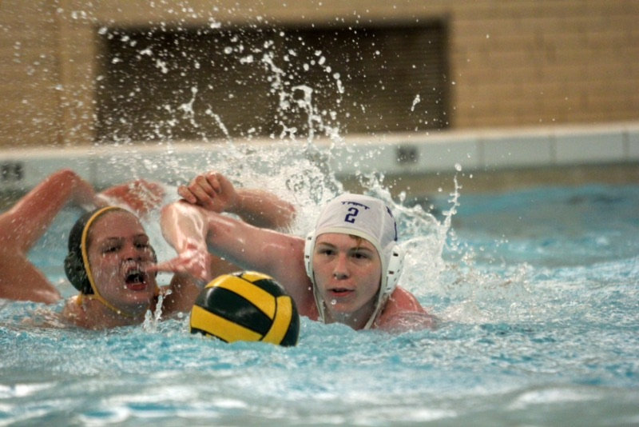
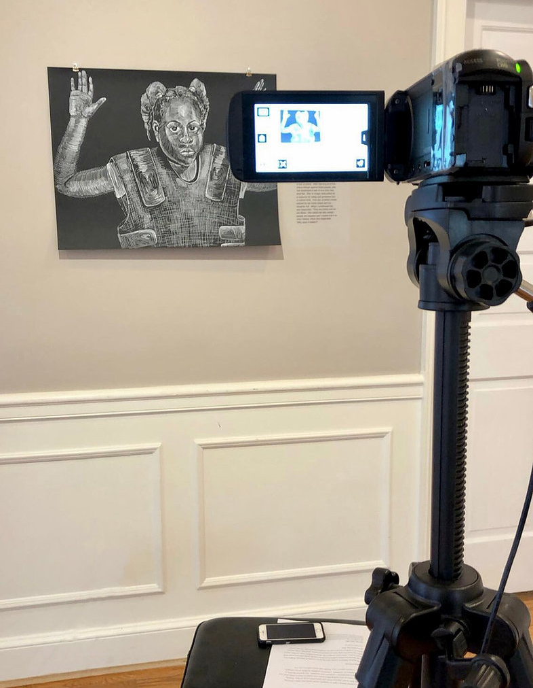

Home
Contact Form
Portfolio
Portfolio

In highschool, I had various interests, but it wasn't until I joined yearbook that I realized what field I wanted to pursue in college. This is one of the photos I took at a water polo match.

I started off at UC in Electronic Media focused on film editing. I was later able to put together some campaign videos for my internship at Kennedy Heights Arts Center.
As I took various classes, my interests became more centered towards advertising and design. I created my own ligature graphic for my portfolio website in one of my graphic design classes.